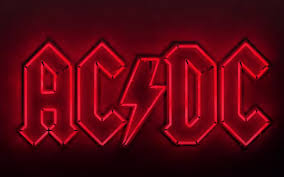
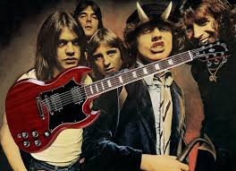
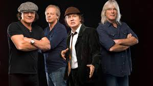

Band Info
AC/DC are an Australian rock band formed in Sydney in 1973 by Scottish-born brothers Malcolm and Angus Young. Their music has been variously described as hard rock, blues rock, and heavy metal,[2] but the band themselves call it simply "rock and roll".
AC/DC underwent several line-up changes before releasing their first album, 1975's High Voltage. Membership subsequently stabilised around the Young brothers, singer Bon Scott, drummer Phil Rudd, and bassist Mark Evans. Evans was fired from the band in 1977 and replaced by Cliff Williams, who has appeared on every AC/DC album since 1978's Powerage. In February 1980, Scott died of acute alcohol poisoning after a night of heavy drinking. The group considered disbanding but elected to stay together, bringing in longtime Geordie vocalist Brian Johnson as Scott's replacement. Later that year, the band released their first album with Johnson, Back in Black, which was dedicated to Scott's memory. The album launched AC/DC to new heights of success and became one of the best selling albums of all time.
The band's eighth studio album, For Those About to Rock We Salute You (1981), was their first album to reach number one in the United States. Prior to the release of 1983's Flick of the Switch, drummer Rudd left the band and was replaced by Simon Wright, being in turn replaced by Chris Slade in 1989. The band experienced a commercial resurgence in the early nineties with the release of 1990s The Razors Edge. Rudd returned to the band in 1994, replacing Slade and appearing on the band's next five albums. Their fifteenth studio album Black Ice was the second-highest-selling album of 2008, and their biggest chart hit since For Those About to Rock, eventually reaching No.1 worldwide.
The band's line-up remained the same for twenty years, until 2014 with Malcolm Young's retirement due to early-onset dementia (he died in 2017) and Rudd's legal troubles. Malcolm was replaced by his nephew Stevie Young, who debuted on AC/DC's 2014 album Rock or Bust, and on its accompanying tour, previous drummer Chris Slade filled in for Rudd. In 2016, Johnson was advised to stop touring due to worsening hearing loss. Guns N' Roses frontman Axl Rose stepped in as the band's vocalist for the remainder of that year's dates. Long-term bass player and background vocalist Cliff Williams retired from AC/DC at the end of the Rock or Bust tour in 2016 and the group entered a four-year hiatus. A reunion of the Rock or Bust lineup was announced in September 2020 and the band's seventeenth studio album Power Up was released two months later.
AC/DC have sold more than 200 million records worldwide, including 75 million albums in the United States, making them the ninth-highest-selling artist in the United States and the 16th-best-selling artist worldwide. Back in Black has sold an estimated 50 million units worldwide, making it the third-highest-selling album by any artist, and the highest-selling album by any band. The album has sold 22 million units in the US, where it is the sixth-highest-selling album of all time. AC/DC ranked fourth on VH1's list of the "100 Greatest Artists of Hard Rock"[11][12] and were named the seventh "Greatest Heavy Metal Band of All Time" by MTV. In 2004, AC/DC ranked No. 72 on the Rolling Stone list of the "100 Greatest Artists of All Time". Producer Rick Rubin, who wrote an essay on the band for the Rolling Stone list, referred to AC/DC as "the greatest rock and roll band of all time".[14] In 2010, VH1 ranked AC/DC number 23 in its list of the "100 Greatest Artists of All Time".
Top Ten Albums
1. Back In Black (1980)
With worldwide sales in excess of fifty million units, and the accolade of being one of the best-selling albums of all time, ‘Back In Black’ is AC/DC’s master work. Released just five months after the death of vocalist Bon Scott, with its sombre title, all black artwork and introductory tolling bell, the album is a dedicated tribute to the fallen singer. With new frontman Brian Johnson joining the Young brothers, bassist Cliff Williams and drummer Phil Rudd, the formula was set for the band’s greatest triumph. Producer Robert John ‘Mutt’ Lange was retained following the success of the previous year’s ‘Highway To Hell’, and decamping to the Bahamas to record it, the islands’ volatile tropical climate even contributed to the writing process, inspiring the lyrics to the opening ‘Hells Bells’. With ‘Shoot To Thrill’, ‘Back In Black’ and ‘Rock and Roll Ain’t Noise Pollution’, the band weren’t short of catchy tunes, but in lead single ‘You Shook Me All Night Long’ the album contains perhaps the most popular AC/DC track of all time. It’s got the songs, but taken as a whole, ‘Back In Black’ is much more than the sum it’s parts. Rock ‘n’ roll ain’t no riddle man, to me it make’s good good sense.
2. Let There Be Rock (1977)
AC/DC’s gargantuan-sounding, biblically titled 1977 album is possibly the heaviest work that they’ve ever released. Legend has it that Angus’ amp even caught fire during the recording of the title track’s incendiary finale. However it’s not just ‘Let There Be Rock’ itself that ignites. As the fiercest AC/DC album in the Bon Scott cannon, it also includes the band’s most recognisable riff in the immortal ‘Whole Lotta Rosie’. Add to that the strip-tease inducing ‘Bad Boy Boogie’, the storming ‘Hell Ain’t A Bad Place To Be’, and the bluesy ‘Overdose’ and what you have is the definitive Scott era AC/DC album. With its cover art, ‘Let There Be Rock’ is also notable as the first AC/DC release to be adorned with the band’s now infamous logo.
3. Highway to Hell (1979)
Until 1979, AC/DC had very much been an insular, family affair. Since the band’s beginnings, brothers Angus and Malcolm had been guided by older brother George, who was part of the team that had produced every AC/DC album thus far. So it was with some reluctance that they welcomed an outside producer into the fold for the first time, for their seventh studio album ‘Highway To Hell’. Smoothing off the rough edges, Robert John ‘Mutt’ Lange finessed the AC/DC formula without diluting the band’s key aesthetic of rock ‘n’ roll riffs, no-frills rhythms and Bon Scott’s unmistakable ramshackle vocal delivery. Jam packed with classic tracks from the storming ‘Shot Down In Flames’ to the immortal title track, it was sadly to become Scott’s final recording with the band, following his tragic death a mere eight months after its release.
4. High Voltage (1976)
Essentially a compilation featuring tracks culled from the band’s first two Australian releases, (debut ‘High Voltage’ and follow-up ‘T.N.T’, both released in 1975) ‘High Voltage’ was AC/DC’s first internationally released album. It may be forty years since it first hit the racks, but as their defining mission statement, it has lost none of its charm. As one of their earliest anthems, the title track is not only intrinsically linked to the band’s name, but was actually constructed around the chord sequence A-C-D-C. It sits in good company, along with the likes of ‘T.N.T’ and ‘The Jack’, which still regularly appear in the band’s live sets. Giving Angus a rare break from lead duties, the opening ‘It’s A Long Way To The Top (If You Wanna Rock ‘n’ Roll)’ meanwhile, features a bagpipe solo from Scotland-born vocalist Bon Scott.
5. Powerage (1978)
A fan favourite, and consistently mooted as the greatest AC/DC album of them all, ‘Powerage’ is ten (or nine, depending on which multi-territory version you own) slabs of ragged rock ‘n’ roll performed by a band at their rawest, raucous best. And who could argue, with the likes of ‘Riff Raff’, ‘Rock ‘N’ Roll Damnation’ and ‘Kicked In The Teeth’ nestled within its grooves. As the first album to feature bassist Cliff Williams, who is still with the band today, it would also prove to be the last for a decade to be overseen by long-time producers Harry Vanda and George Young. Its striking cover art meanwhile, featuring a maniacal electrified Angus is among the band’s most recognisable images.
6. Dirty Deeds Done Dirt Cheap (1976)
As one of AC/DC’s biggest selling albums in the U.S.A., thanks to its posthumous post-‘Back In Black’ state side release, ‘Dirty Deeds Done Dirt Cheap’ is something of an oddity in the band’s catalogue. While those who bought it then may have been surprised to hear Bon Scott’s filthy drawl instead of Brian Johnston’s eardrum piercing wail, it’s perhaps the most varied set of tracks that the band has ever released. With the stomping title track, frenetic boogie of ‘Problem Child’, and does-what-it-says-on-the-tin ‘Rocker’ it may contain high-calibre, textbook AC/DC fare, however tempered by the blues of ‘Ain’t No Fun (Waiting Round To Be A Millionaire)’ and the sleaze of ‘Squealer’ it is anything but formulaic. The real surprise however lies in the melancholic ‘Ride On’, which proved that AC/DC could do slow too, without going soft.
7. For Those About To Rock We Salute You (1981)
With its golden embossed cover featuring a lone cannon, AC/DC’s eighth album arrived with a bang in 1981. Regrouping for a third and final time with producer Robert John ‘Mutt’ Lange to record their second outing with vocalist Brian Johnston, the band delivered yet another hit, and one of the biggest sellers of their career. Although a quick glance at the track listing may reveal little to excite the casual fan, it contains some great tracks for those willing to go a little deeper. With ‘Spellbound’, ‘C.O.D’ and single-entendre single ‘Let’s Get It Up’, there’s more to ‘For Those About To Rock We Salute You’ than meets the eye. However it’s undoubtedly the domineering title track that is the album’s highlight. Closing every AC/DC concert since 1981, with its crowd saluting cannons, the bombastic anthem brings a spine-tingling climax to each show.
8. Flick Of The Switch (1983)
From AC/DC’s least celebrated period, ‘Flick Of The Switch’ is often unfairly maligned along with its follow up ‘Fly On The Wall’ (1985) and 1988’s ‘Blow Up Your Video’. Given what had gone before, it was perhaps inevitable that the band would at some point struggle to maintain the high standards that they had set for themselves. However ‘Flick Of The Switch’ still contains some cracking tunes, and the title track, singles ‘Nervous Shakedown’ and ‘Guns For Hire’, and opener ‘Rising Power’ are all underrated AC/DC gems. Opting to produce themselves for the first time, the band’s sound was rawer than it had been since 1978’s ‘Powerage’. The times the were a changin', and it would prove to be the last AC/DC album to feature drummer Phil Rudd for twelve years.
9. Black Ice (2008)
Many had feared that they had seen the last of AC/DC following a prolonged period of inactivity from the band at the end of their 2000 – 2001 ‘Stiff Upper Lip’ world tour. With only a handful of one-off live appearances in the intervening years, the five-piece finally ended their silence, and the longest gap between studio releases (an astonishing eight years) with the release of ‘Black Ice’ in 2008. Debuting at number 1 in an incredible thirty-one countries including the U.S.A., and the U.K., it returned the band to commercial heights not seen since the early 1980s. It may have been a long time coming, but it was worth the wait, as tracks such as ‘Rock ‘N’ Roll Train’, ‘Anything Goes’ and ‘War Machine’ proved. Though going out on a high, it would sadly prove to be founder member Malcolm Young’s final album.
10. The Razor's Edge (1990)
Following a lacklustre period for the band both artistically and commercially in the mid to late eighties, AC/DC turned a corner in the new decade with their twelfth release ‘The Razors Edge’. With sold out tours and a triumphant headline appearance at Castle Donington’s ‘Monsters Of Rock’ festival, AC/DC were back on top. With new drummer Chris Slade behind the kit, the band were re-energised, releasing some of their most consistent material in a decade. Bruce Fairbairn’s polished production may have aided the band to successes in the U.K. top 40 with ‘Money Talks’ and ‘Are You Ready’, however it's the presence of lead-off single and opening track ‘Thunderstruck’ that makes this album worthwhile alone. With Angus’ frantic fretwork, Malcolm Young and Cliff Williams’ chanting vocal lines, and tension-filled build up, it is now rightly regarded as among the greatest AC/DC anthems of them all.